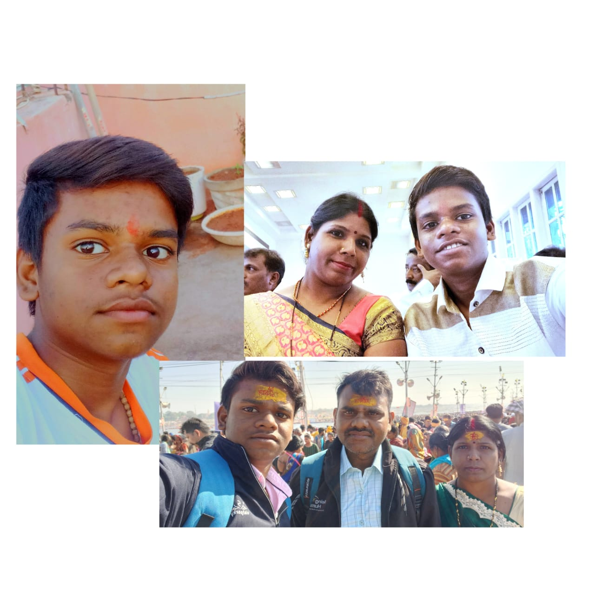

👦 My Brother – Krithik Kumar Gupta 🎓

🏫 School: Jindal Adarsh Vidyalaya, Tornagallu, Bellary, Karnataka
📚 Studying in: Class 10th
- 🎯 He is a focused and intelligent student.
- 💻 He loves learning new things, especially about computers and science.
- ⚽ He enjoys playing outdoor games and staying active.
- 😊 Always cheerful and spreads positivity in the family.
- 🧠 He dreams big and works hard to achieve his goals.
- ❤ He is a loving and caring brother who respects everyone.
⬅ Go Back to Home Page